L’éco-conception, c’est une approche méthodique qui prend en considération les aspects environnementaux lors du processus de conception et développement dans le but de réduire les impacts environnementaux négatifs tout au long du cycle de vie d’un système.
source:NF X30-264
exemple
Prenons l'exemple d'une basket.
C'est en moyenne 30 composants, 5 matériaux, fabriqué en Asie, acheminée par un transporteur, vendue par une enseigne, portée 2 ans par son utilisateur·rice, puis jetée.
L’eco-conception c’est réduire les impacts environnementaux négatifs tout au long de leur cycle de vie de la chaussure (extraction des matières premières, fabrication, transport, utilisation, fin de vie), tout en conservant leurs performances techniques, économiques et sociales.
Eco-concevoir, c’est :
Intégrer la performance environnementale d’un produit/ processus/ service dès sa conception et dans le processus décisionnel, au même titre que le cout et la performance technique.
exemple
L’impact environnemental du polymère utilisé dans la semelle devra entrer en compte au même titre que son cout, sa performance technique (e.g. sa résistance aux frottements et à l’usure) et sa performance sociale (e.g. condition des travailleurs dans l’usine de production du caoutchouc).
Minimiser le ratio quel impact / quelle performance selon son usage et ses besoins en terme de fonctionnalité.
exemple
Une basket citadine portée pour aller au bureau ne nécessite pas une semelle en caoutchouc haute résistance. Surdimensionner le matériau peut augmenter son impact environnemental sans performance supplémentaire pour l’utilisateur-rice.
"Les choix effectués lors de la conception (matériaux, procédés de fabrication, architecture, masse, réparabilité, durée de vie, recyclabilité, etc.) conditionnent jusqu'à 80 % des impacts environnementaux qu'un produit générera au cours de son cycle de vie." source:environment.ec.europa.eu
2. Les grands principes de l'éco-conception
L'éco-conception est une approche :
cycle de vie : l’ensemble des étapes du cycle de vie du produit / service / système doit être pris en considération : depuis l’extraction et le raffinage des matières premières jusqu’à la fin de vie.
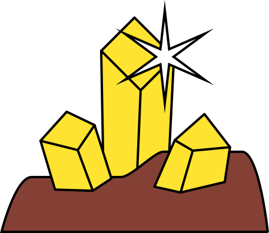
extraction des matières premières
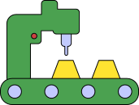
production
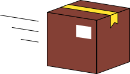
distribution
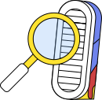
usage et maintenance
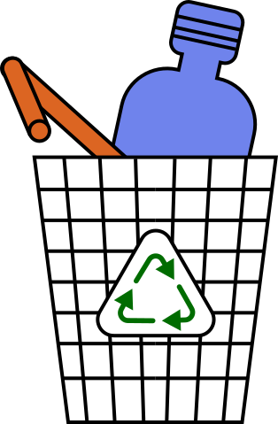
fin de vie, recyclage
multicritères : on ne se limite pas à un seul indicateur environnemental. Il existe tout un tas d’impacts environnementaux qu’il est important d’analyser, en plus de l’impact sur le changement climatique (appelé aussi empreinte carbone), comme la consommation d’eau, la pollution atmosphérique mais aussi des sols, l’épuisement des ressources naturelles, la toxicité…
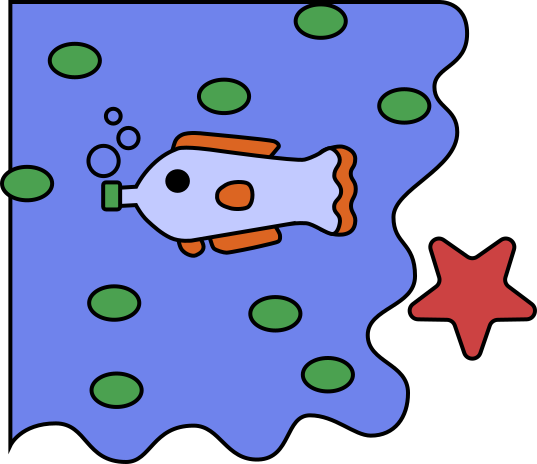
eutrophisation marine
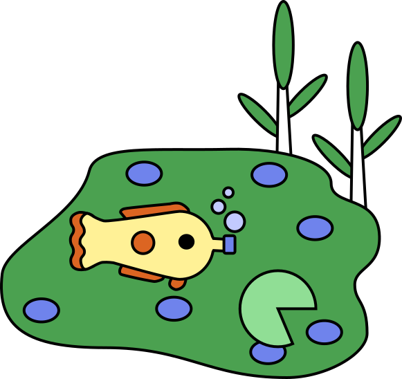
eutrophisation des eaux douces
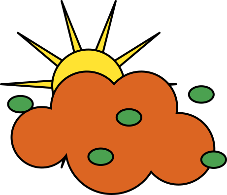
formation d'ozone photochimique
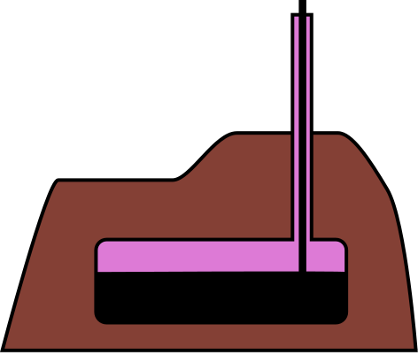
utilisation des ressources fossiles
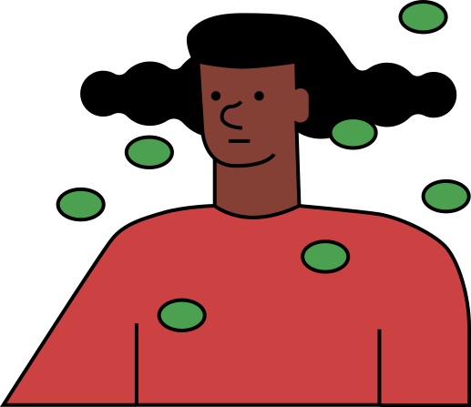
toxicité humaine non-cancéreuse
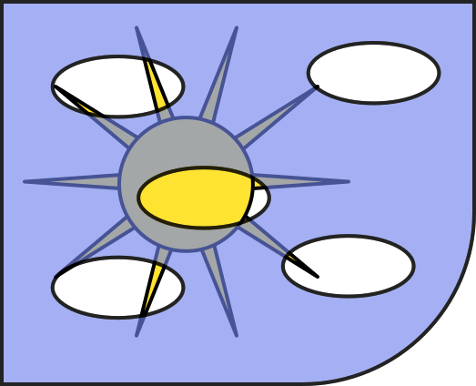
appauvrissement de la couche d'ozone
toxicité humaine cancéreuse
particules fines
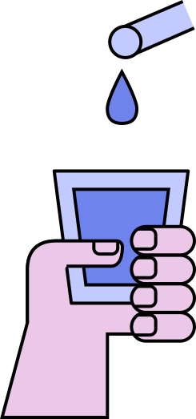
utilisation de l'eau
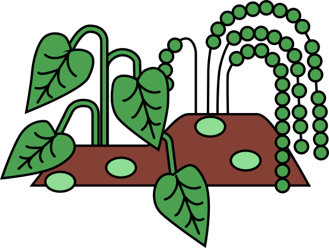
eutrophisation terrestre
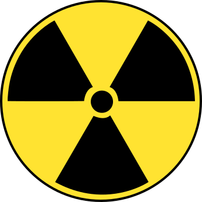
rayonnements ionisants
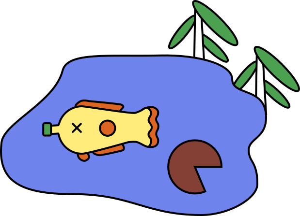
écotoxicité de l'eau douce
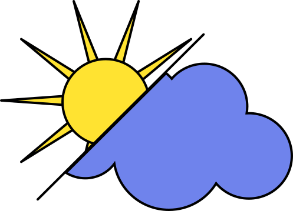
changement climatique
utilisation des minerais et métaux
analyse du cycle de vie
exemple
La production de la chaussure a un impact sur le changement climatique (émission de GES – gaz à effet de serre), mais a aussi un impact sur l'épuisement des ressources fossiles (dues au pétrole extrait pour produire le plastique, mais aussi à l'énergie utilisée pour produire la chaussure) et un impact sur les émissions de particules (dues à la production d'énergie).
Ces approches cycle de vie et multicritère sont clés, car elles permettent d'éviter ce qu'on appelle des transferts d'impact. Un impact peut être déplacé d'une étape du cycle de vie à une autre, ou bien d'un type d'impact à un autre.
exemple
Remplacer le polymère pétro-sourcé par un polymère biosourcé permet de diminuer les impacts sur le changement climatique et l'épuisement des ressources fossiles, mais augmente les impacts sur l'utilisation des sols, la consommation d'eau et l'eutrophisation (à cause de la culture des végétaux d'où sont extraits les composés nécessaires à la production du polymère biosourcé).
multi-acteurs et collaborative : l’éco-conception est également une approche multi-acteur, multidisciplinaire, et collaborative, intégrant les parties prenantes internes et externes à l’organisation tout au long de la chaine de valeur (client, fournisseur, collaborateur, réparateur, recycleur …). Chaque acteur présente une expertise et des attentes spécifiques, qu’il faut prendre en compte pour structurer une vision partagée d’un projet d’éco-conception.
extraction des matières premières
production
distribution
usage et maintenance
fin de vie, recyclage
La performance environnementale
désigne la capacité d’une organisation, d’un produit, d’un service ou d’un projet à minimiser ses impacts négatifs sur l’environnement tout en optimisant l’utilisation des ressources.